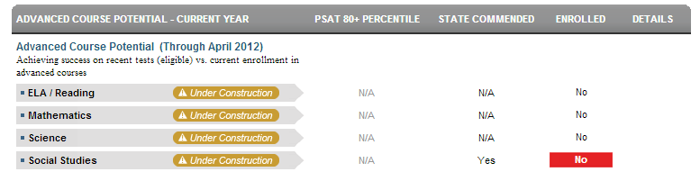

Dashboard Metrics


Advanced Course Potential
Background
Student Dashboard Metrics
Because of the importance of rigorous coursework to postsecondary success, several districts, including Charlotte and Dallas, are beginning to incorporate into their internal performance management dashboards metrics to monitor advanced course enrollment among eligible students. In focus group discussions conducted with educators, the Advanced Course Potential metric was considered useful by 92% of respondents when reported at the campus level, but by only 85% of respondents when reported at the student level. The implication is that this metric, though still valuable to teachers in targeting their individual students for advanced coursework, may be even more useful to principals and counselors in developing strategic, school-wide approaches to increasing enrollment and success in advanced courses.
Primary Metric
- Advanced Course Potential - Current Year: for the current year only, whether or not a student has demonstrated potential for advanced coursework based on state assessments (PSAT (if taken, performance at greater than or equal to 80th percentile) and state assessment commended score at or above 2400) and whether or not they are enrolled in advanced courses (AP, IB or DE courses) in the four core subject areas.
Related Metrics
- Advanced Course Enrollment, Completion and Mastery - Prior Years: for prior years only, the number of AP, IB or dual enrollment (DE) courses the student has been enrolled in, completed and mastered (exam score at or above specified criterion) in the four core subject areas.
- PSAT Performance: whether the student has taken the PSAT/NMSQT, the student’s score, and whether this meets state or district criteria.
- State Assessment Performance: reports historical, detailed and trend data on a student’s state assessment performance in all tested subjects: reading/ELA, writing, math, science and social studies at the applicable grade levels. Performance on alternative tests, including those for special education and Limited English Proficient students, is also reported.
User Interface
Dashboard Example
Figure 1 shows the Advanced Course Potential metric as seen on the student dashboard.

Figure 1 Ed-Fi Advanced Course Potential Metric
Status Definition
The PSAT 80+ Percentile column is determined by student comparison to campus-specific thresholds (campus goals) which are set at the district level for reading, writing, and mathematics subject areas. The default PSAT percentile threshold set in the Ed-Fi dashboard is 80%.
The state assessment column is determined by whether a student meets the state-defined scores that classify students as Commended. The results are determined by a specific state assessment flag indicating the student achieved an "Commended” score.
The Enrolled column is determined by whether or not a student is enrolled in advanced courses and by comparison to the defined thresholds for PSAT or state assessment in a specific subject.
Table 2 lists the status indicators as seen on the student dashboard.
Metric Indicator | Trend Comparisons | |||
Metric Name | Sub-metric Name | Metric Status Indicator | Compares: | To: |
Advanced Course Potential | ELA/Reading | "Yes" = If student's PSAT or state assessment score is greater than or equal to campus goal "No" = If student's PSAT or state assessment score is less than campus goal "Yes" = If student is enrolled in an Advanced Course | N/A | N/A |
Mathematics | "Yes" = If student's PSAT or state assessment score is greater than or equal to campus goal "No" = If student's PSAT or state assessment score is less than campus goal "Yes" = If student is enrolled in an Advanced Course | N/A | N/A | |
Science | "Yes" = If student's PSAT or state assessment score is greater than or equal to campus goal "No" = If student's PSAT or state assessment score is less than campus goal "Yes" = If student is enrolled in an Advanced Course | N/A | N/A | |
Social Studies | "Yes" = If student's PSAT or state assessment score is greater than or equal to campus goal "No" = If student's PSAT or state assessment score is less than campus goal "Yes" = If student is enrolled in an Advanced Course | N/A | N/A | |
Trends
This metric has no trend indicators.
Periodicity
The periodicity of this metric is dependent on when the PSAT and/or state assessment files are available to load.
Recommended Load Characteristics | |
| Calendar | School year |
| Frequency of data load | When new course enrollments occur |
| Latency | 6-9 months |
| Interchange schema | Interchange-StudentAssessment.xsd |
Tooltips
The standard tooltips for metric definitions, column headers, and help functions display for this metric.
Business Rules
The Advance Course Potential metric compares the student’s potential for advanced courses in specific subjects (as measured by high scores on the PSAT and/or the state assessment) against whether the student is currently enrolled in advanced or preadvanced (in middle school) courses in the following subjects for the current school year in grade levels 6 – 12.
- English Language Arts (ELA)
- Mathematics
- Science
- Social Studies
A student is rated as having “advanced course potential” based upon their performance in standardized tests, specifically if the student’s performance on either the PSAT or the state assessment exceeds a certain threshold.
Data Assumptions
- Advanced courses are those defined by the course characteristic:
- AP courses
- PreAP courses(middle school)
- IB courses
- PreIB courses (middle school)
- Other advanced courses identified by the course characteristic
- The state-defined threshold of “Commended” is indicated in the state assessment results file.
- If the PSAT or state assessment are taken multiple times, only the most recent results are used.
- Student state assessment scores by subject are available for the grade level (ELA/reading, mathematics, science, social studies and writing).
- The type of the state assessment test is available per student (e.g., state assessment-M, state assessment-S, etc.).
Computed Values
There are no calculations for this metric.
Data Anomalies
Anomalies
Best practice is to footnote these anomalies:
- Late enrollees may have taken college readiness tests at their previous school
- Loading of data from multiple administration dates
- Student may have missing transcript data
Footnotes
Footnotes are used to provide addition data information concerning the metric. Footnotes are sequential for the entire page. Therefore, a metric's footnote may not begin with the number 1.
The following footnotes appear below the metric:
- The type of the state assessment test is noted per subject (e.g., state assessment-M, state assessment-Alt, etc.).
Date of Refresh
Best practice is for the date of last data refresh to appear next the metric in the following format:
- (Through April 2010)
Implementation Considerations
Student Identity
Maintaining a correct and consistent student identity is at the center of any education data system. Most systems use some sort of unique identifier. However, sometimes this identifier is entered incorrectly or sometimes different systems use different identifiers.
The UDM XML supports the interchange of multiple types of identifiers. The StudentReference is a complex type within the UDM to maintain the referential integrity of the student (that is, ensuring that the data associated with each student is accurately associated with the right student). The complex type of the student reference assists with implementing the accurate matching algorithm to identify a student by utilizing any of the individual attributes (e.g., Student Unique State ID, Student ID, Campus Local ID (with Campus ID), Name and Birth Date). For example, if the Student Unique State ID is unknown, you can find the student’s identity by their Student ID, First Name, Last Name and Birth Date.
Transfer Students (Late Enrollments)
Transfer students may not have complete transcripts from which to review prior exam scores.
Reporting Retakes of the Same PSAT or State Assessment Test
Currently, the Ed-Fi dashboards report only the most recent result for a given PSAT test or a given state assessment test by type, grade level, and subject. Alternatively, developers can display the best results across all attempts.
State Assessment Non-Participation
Students who are scheduled to take an assessment, but are absent or exempt are reported in the assessment results files, along with the reason (e.g., absent, exempt for specific reason, etc.). Best practice is for developers to flag or footnote absent and exempt students in some manner.
Advanced Course Definition
Best practice is for developers to ensure that the definition of the exact courses that qualify as “advanced” include AP and IB courses in high school and PreAP and PreIB courses in middle school, as well as those defined as advanced by the state and those defined locally by the district. This mapping looks at the course characteristic type as coded locally. In the case of courses that are both AP and another type such as GT, the course should have the characteristic type of AP. If the other characteristic is recorded, the course will not appear as 'advanced.'
Changes in State Assessments
If states that are undergoing changes in assessment standards and/or tests, it may impact the way that current and longitudinal data is presented.
State Assessment Standards
With state assessment, the assessment indicators are based upon the percentage of students who perform satisfactorily on the assessment. In 2014, with the first full release of state assessment, they will be based on the percentage of students that meet the college ready standard.
state assessment EOC assessments for Algebra II and English III will have college readiness objectives. Evaluating the performance of science and social studies EOC assessments as related to college readiness is still pending. A student must pass these objectives in order to be identified in the data file as college ready.
Each of these objectives requires that the state determine thresholds for student and campus performance.
The Ed-Fi dashboards assume that the test providers include all the data related to state assessment, EOC and college readiness.
Drill Downs
Drill Down View
The dashboards include the option to see more detail that is associated with a specific metric. Table 4 shows the drill down view that is recommended for this metric.
| More | Link to Student Academic Profile page that displays test score history and current and previous courses taken. |